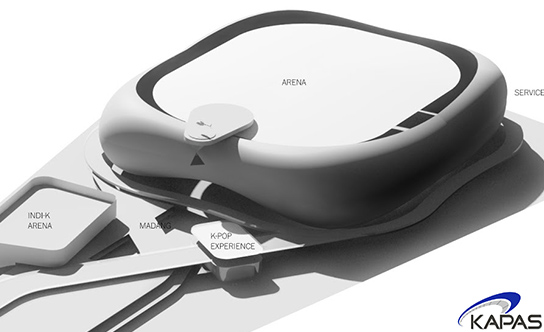

Arenas
KAPAS offers a comprehensive range of services related to arena feasibility, development, and operations.
- 

-
Market Feasibility Study
KAPAS serves as an advisor in evaluating the market viability of an arena. The study analyzes supply and demand characteristics specific to Korea, determination of size and seating configurations, FF&E (furniture, fixtures and equipment), and financial modeling of future cashflows
-
Project Development / Management
KAPAS can undertake site analysis, infrastructure planning, establish project budget / schedule, and identify critical attributes to ensure that the best revenue model for the arena is identified. KAPAS also has the experience with working with global arena architect/s and believes strongly in giving the architect the environment and freedom they need to develop world class designs.
-
Operations
The success of an arena is highly determined by the day-to-day real estate operations of the facility and most importantly, its content. Accordingly, KAPAS has a dedicated team of professionals with extensive experience in both real estate and live entertainment, thus providing an independent and unique service that assures the success of an arena and its operations.
"South Korea’s long-awaited first international-class indoor arena with a seating capacity of 18,000 is on track to open in Ilsan Halluworld"
- Financial Modeling and Feasibility
-
Development and Operating Agreements
– Provide guidance to stakeholders, i.e. government entities, contractors, financing institutions & investors, etc.
- Site Analysis and Infrastructure Planning
- Establish Project Budget and Schedule
-
Generate Facility Program
- Basic instruction of what the facility will be
-
Revenue Integration
- Naming rights, sponsorships, corporate boxes, F&B and ticketing platforms.
-
DESIGN
- Schematic Design, Design Development and Construction Documents, Furniture, Fixtures, and Equipment (FF&E)
-
PRE-CONSTRUCTION SERVICES
- Estimate Cost / Refine Schedule, Building Information Model (BIM) Analysis, Value Engineering, Finalize GMP (Guaranteed Maximum Price) Contract.
-
CONSTRUCTION MANAGEMENT
- Project Tracking including Construction Schedule Monitoring and Budget Compliance.
- ARENA OPERATION AND MANAGEMENT